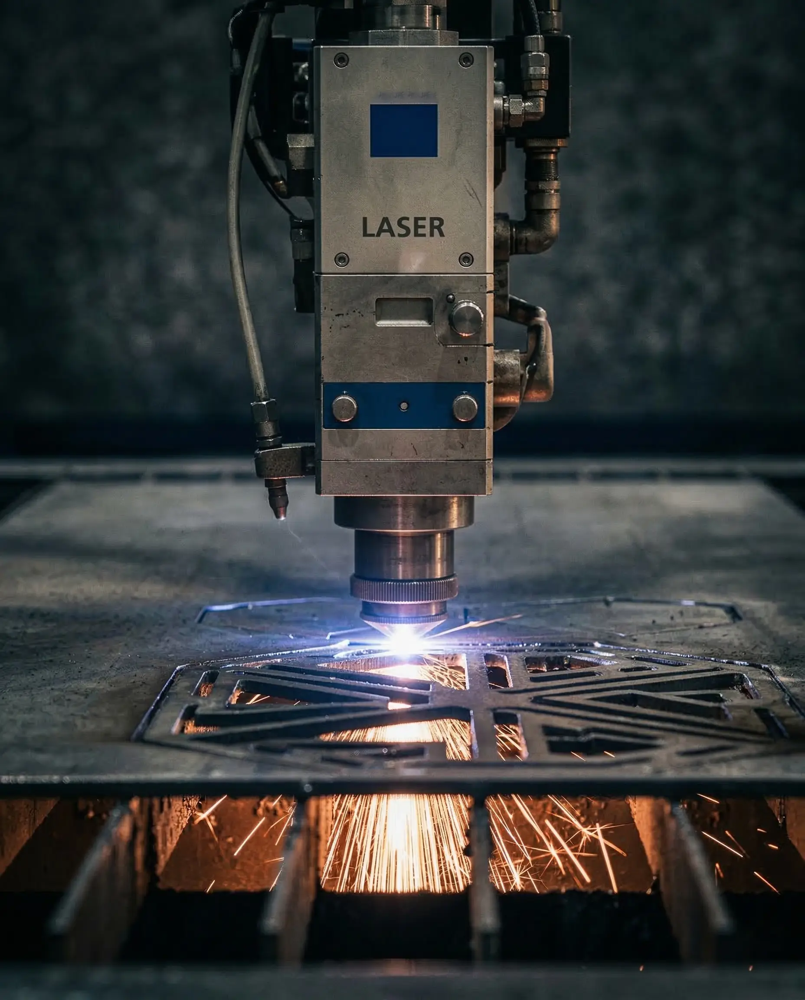
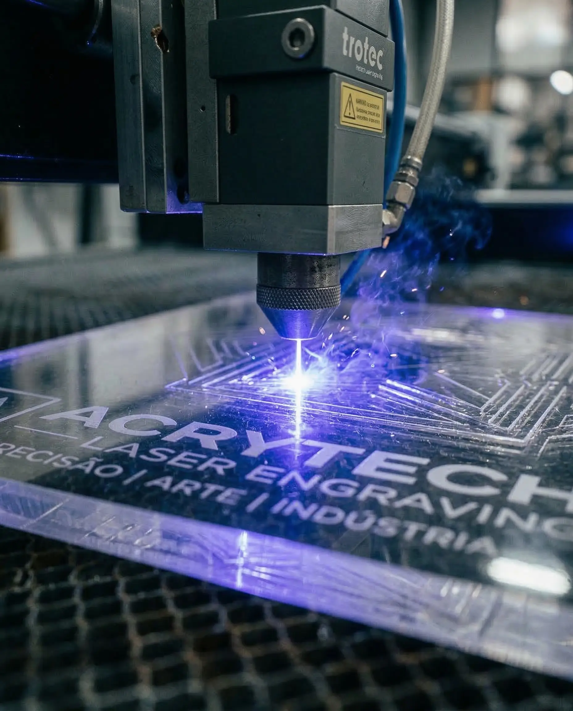
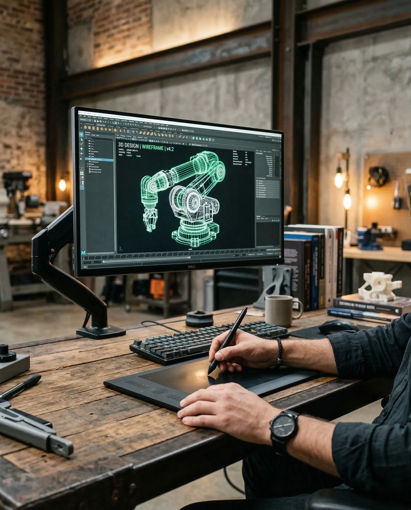
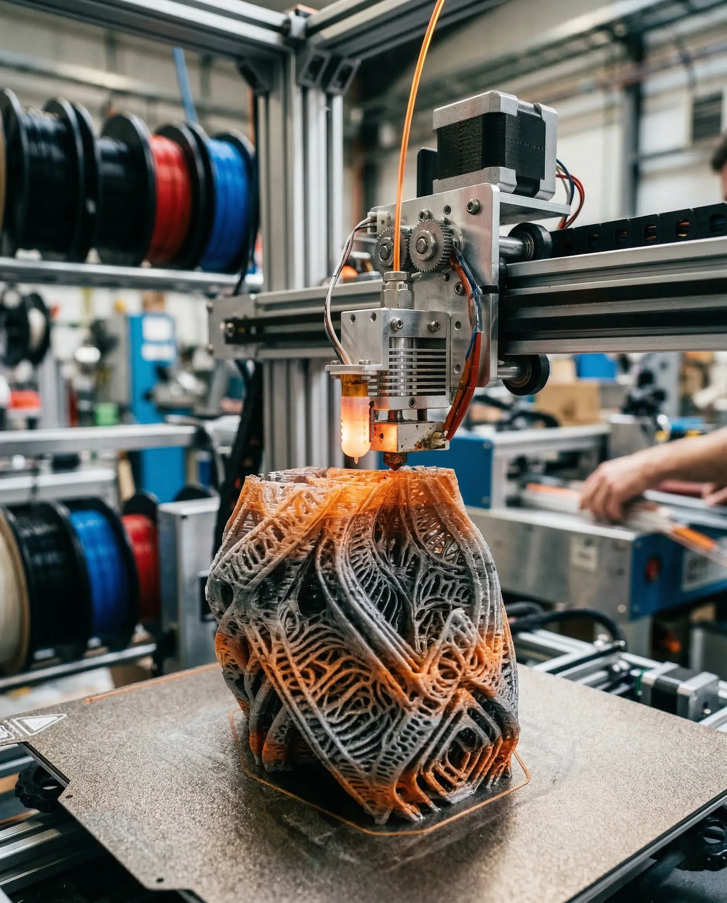
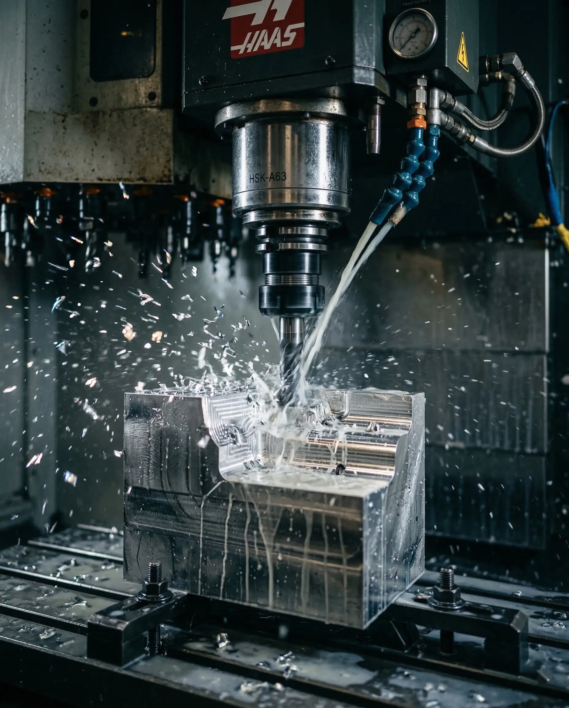
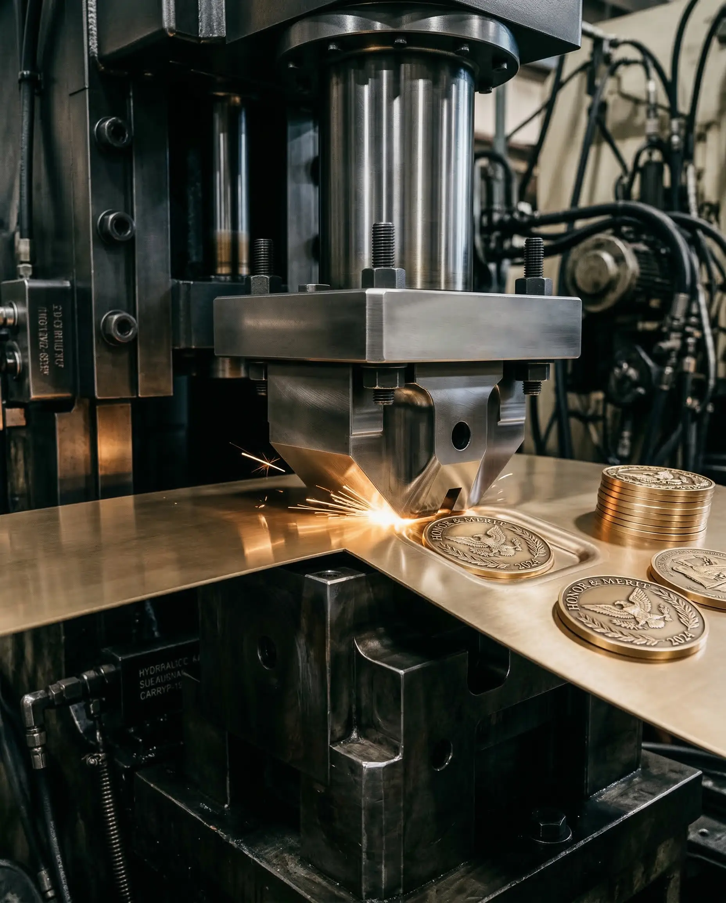

4WINNERS
Excelência em prémios e brindes.
Excelência em prémios e brindes.

Precisão milimétrica para formas complexas. Utilizando um feixe de laser de alta potência, este processo corta materiais com uma precisão excecional, permitindo a criação de geometrias complexas e acabamentos limpos sem contacto físico com a peça.

Detalhes permanentes em diversas superfícies. A gravação a laser remove seletivamente a superfície de um material para criar marcas permanentes, como logótipos, números de série ou designs decorativos, com um detalhe impressionante.

A modelação 3D é o processo de criar uma representação matemática de um objeto tridimensional usando software especializado. É o primeiro passo essencial para a impressão 3D, maquinação CNC e visualizações de produtos.

A impressão 3D, ou manufatura aditiva, constrói objetos tridimensionais camada por camada a partir de um modelo digital. É perfeita para prototipagem rápida, peças personalizadas e produção de baixo volume.

A Maquinação por Controlo Numérico Computadorizado (CNC) utiliza ferramentas de corte controladas por computador para remover material de um bloco sólido, esculpindo peças com tolerâncias muito apertadas.

A estampagem é um processo de conformação de chapas metálicas, onde a força de uma prensa molda o material para criar peças com precisão e repetibilidade. Ideal para produção em massa de componentes complexos.

A quinagem é um processo de dobragem de chapas de metal utilizando prensas dobradeiras (quinadoras). Permite criar ângulos e formas complexas com alta precisão e repetibilidade.

A calandragem é um processo contínuo de curvatura de chapas metálicas que passam por rolos. É utilizado para formar cilindros, cones e outras formas circulares a partir de chapas planas.

O repuxamento é uma técnica de conformação de metal que molda uma chapa circular sobre um mandril rotativo. Permite criar peças ocas, simétricas e sem costuras, como taças, cones e hemisférios.

O torneamento é um processo de maquinação que roda uma peça de trabalho enquanto uma ferramenta de corte remove material para criar formas cilíndricas. É ideal para eixos, pinos e outras peças de revolução.

A galvanização é um processo eletroquímico que reveste uma peça metálica com uma fina camada de outro metal. Serve para melhorar a aparência, a resistência à corrosão e a condutividade.

A impressão UV utiliza tintas especiais que secam instantaneamente sob luz ultravioleta. Este processo permite imprimir designs vibrantes e duradouros numa vasta gama de superfícies rígidas e semi-rígidas.
Estamos prontos para transformar a sua ideia em realidade.